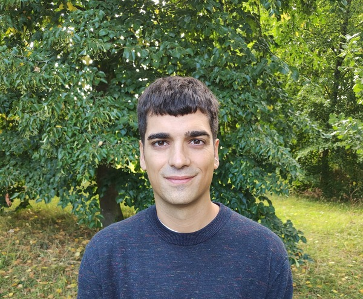

Assistant Professor/Lund University

Lund, Sweden
Welcome! I am an Assistant Professor at Lund University. I received my Ph.D. from the European University Institute in January 2025.
My research lies at the intersection of labor, education, and family economics. Here is my Google Scholar profile.
Before joining Lund, I was a Post-Doc Fellow at the University of Bologna.
Contact
adriano.de_falco [at] nek.lu.se
§ Research
Publications
Forthcoming in The Economic Journal
Abstract
Using administrative data from Chile, we analyze whether financing higher education through student loans or grants affects the college major choices of prospective university students. We exploit institutional arrangements that allocate either type of financing based on a standardized test to locally identify exogenous variation in access. Students who are marginally eligible for grants are more likely to enroll in high-paying fields such as STEM. We complement this reduced-form result with a discrete choice model that we estimate on data for narrowly defined higher education programs drawn from past graduates. The results indicate that, holding other program characteristics constant, grant recipients place higher value on fields with high earnings growth potential, while being less concerned about a lower graduation probability.
Working Papers
Abstract
This paper analyzes the impact of a recruitment policy in Chile designed to improve the quality of new teachers by incentivizing high-achieving and restricting low-achieving high school graduates from entering the teaching profession. We document that the reform effectively improved the average test scores of new teachers. We construct teacher value-added (TVA) measures and find that the reform increased TVA for mathematics but not for Spanish teachers. Finally, we show that most of the effect cannot be explained by new teachers' higher average test scores, but rather can be attributed to beneficial but unintended effects of the reform.
Conditionally accepted at Demography
Abstract
We investigate whether the decision of young adults on when to leave the parental home is influenced by the number of siblings they have, in the context of European countries over the last seventy years. Using data from two large surveys and exploiting random variation in sibship size induced by twin births, we identify the causal effect of having an extra sibling on the timing of home-leaving. We find that one additional sibling speeds up the transition to independent living by roughly six months. We provide evidence that our results directly stem from a decrease in the value of intergenerational coresidence implied by having an extra sibling.
Abstract
This paper studies the interaction between unconditional salary increases and performance-based bonuses in determining teacher retention and workforce composition. I exploit Chile's Carrera Docente, a national reform that raised base salaries by approximately 20% for all public school teachers and introduced a career stage bonus linked to evaluation scores. Because the reform initially applied only to public schools, roughly half of the school system, I use a difference-in-differences design and find that exit rates fell by approximately 18%, but the effect is concentrated among low-value-added teachers. A regression discontinuity design at the career stage threshold shows that the performance-based bonus has no additional retention effect beyond the base salary increase. The retention gains of the reform are driven entirely by the base salary increase, with no additional contribution from the performance-based bonus.
Abstract
We conducted a randomized controlled trial to test the effectiveness of creative STEM activities on the propensity to enrol in a STEM university course and career aspirations on a sample of 710 high school students in Italy. The activities covered courses on 3D printing, laser cutting, and programming, and were taught by FabLabs, non-profit digital fabrication laboratories with an innovative pedagogical approach grounded in learn-by-doing, problem-solving skills, and creativity. We find that access to these courses increased students' intentions to pursue STEM majors at university and STEM careers, possibly through an increased STEM self-efficacy, namely students' beliefs in their ability to pursue STEM studies.
Work in Progress
Profiling in Active Labour Market Policy: Evaluating Italy's New System for Sorting Job Seekers
Selected project for the VisitINPS PNRR Fellowship (2024)